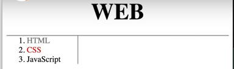

WEB2 - CSS
- 속성과 선택자
- 박스모델
- 그리드
- 반응형 디자인
- CSS코드의 재사용
1. box model 소개
- 박스모델: HTML 태그 하나하나를 일종의 네모난 박스로 취급해서
그것의 부피감을 결정하는 것
즉, 디자인에서 핵심적인 요소이다.
- h1 태그는 자동 줄바꿈이 되지만
a 태그는 그렇지 않다.
그것이 더 편하기 때문에 디폴트 설정이 그렇게 돼있는 것이다.
- ※ 각각의 태그가 차지하고 있는 공간을 확인하기 위해 선을 그려볼 수 있다.
ex) h1, a{
border-width:5px;
border-color: red;
border-style: solid;
}
※ solid 단선 double 이중선 dotted 점선 dashed 절취선
※ border 속성은 합쳐서 하나로 쓸 수 있다.
ex) h1, a{
border: 5px red solid;
}
cf) 선택자는 콤마로, border는 띄어쓰기로
- ① block level element
: h1처럼 화면 전체를 사용하는 태그
② inline element
: a처럼 자기 크기만큼 사용하는 태그
※ element=tag
태그마다 ① 또는 ②로 디폴트 설정이 되어있고,
이것은 display 속성으로 바꿀 수 있다.
ex) display: inline 또는 display: block
cf) display:none을 하면 화면에서 안 보인다
- 박스모델은 아래 그림과 같은 구조로 이루어져 있고,
이것은 CSS를 통해서 자유자재로 바꿀 수 있다.
ex) h1{
border: 5px red solid;
padding:20px;
margin:20px;
display:block;
width: 100px
}

- 웹페이지에서 마우스 오른쪽 클릭하고 검사를 누르면
개발자 도구가 나온다.
왼쪽에서 특정 태그를 선택하고 오른쪽의 Styles를 보면
① 위쪽에는 그 태그가 어떤 CSS 스타일의 영향을 받고 있는지를 일목요연하게 보여준다.
② 아래쪽에는 그 태그의 margin, border, padding 값이 나온다.
각 부분에 마우스를 갖다 대면 웹페이지에서 해당 부분 색깔이 바뀐다.
2. box model을 써먹기
박스모델을 이용하여 다음 그림과 같이 웹페이지에 줄을 그어보자.
(1) 가로줄 긋기
① h1 태그의 아래쪽에만 테두리를 준다.
h1{
border-bottom: 1px solid gray
}
② 세부조정을 위해서 개발자 도구를 켜서 box model을 본다.
위쪽 여백이 너무 넓다.
살구색은 margin이므로 margin:0;을 추가한다.→해결
③ 테두리가 너무 달라붙어 있다.
padding:20px;을 추가한다.→해결

③ 줄의 양옆에 여백이 있다.
개발자 도구를 보면 body 태그에 margin값이 존재하기 때문임을 알 수 있다.
margin:0;을 추가한다.→해결
h1 {
font-size:45px;
text-align: center;
border-bottom:1px solid gray;
margin:0;
padding:20px;
}
(2) 세로줄 긋기
① ol 태그 오른쪽에만 테두리를 준다.
ol{
border-right:1px solid gray;
}
② 줄이 화면 제일 오른쪽에 그어져버렸다.
∵ ol 태그는 화면 전체를 사용하는
block level element이기 때문
width:150px;를 추가해주면 화면 가운데로 온다.→해결
③ 가로줄과 세로줄 사이에 여백이 있다.
개발자 도구를 보면 margin값이 존재하기 때문임을 알 수 있다.
margin:0;을 추가한다.→해결

④ 1. HTML로 시작하는 목록이 너무 위에 붙어있다.
padding: 20px;→해결
ol{
border-right:1px solid gray;
width:100px;
margin:0;
padding:20px;
}